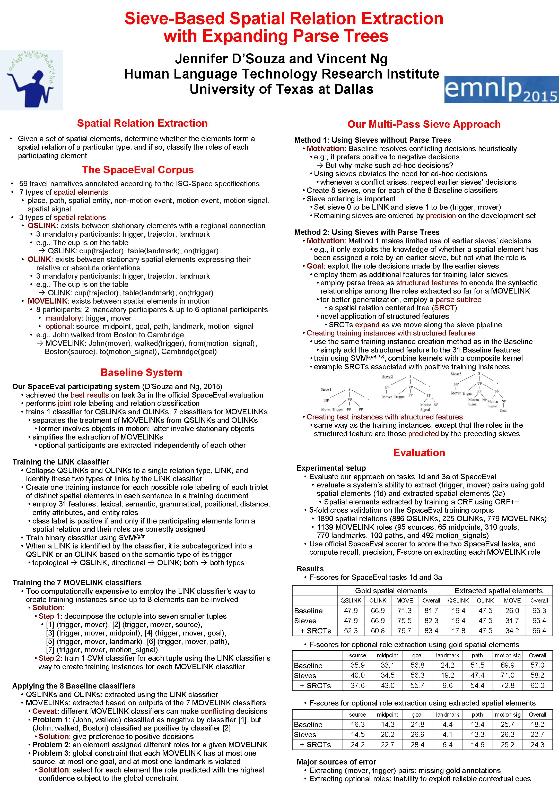

Sieve-Based Spatial Relation Extraction with Expanding Parse Trees
Jennifer D'Souza and Vincent Ng.
Proceedings of the 2015 Conference on Empirical Methods in Natural Language Processing, pp. 758-768, 2015.
Click here for the
PDF version.
Additional information about this project, including the source code of our system, is available here.
Abstract
A key challenge introduced by the recent SpaceEval shared task on spatial relation extraction is the identification of MOVELINKs, a type of spatial relation in which up to eight spatial elements can participate. To handle the complexity of extracting MOVELINKs, we combine two ideas that have been successfully applied to information extraction tasks, namely tree kernels and multi-pass sieves, proposing the use of an expanding parse tree as a novel structured feature for training MOVELINK classifiers. Our approach yields state-of-the-art results on two key subtasks in SpaceEval.
BibTeX entry
@InProceedings{DSouza+Ng:15c,
author = {Jennifer D'Souza and Vincent Ng},
title = {Sieve-Based Spatial Relation Extraction with Expanding Parse Trees},
booktitle = {Proceedings of the 2015 Conference on Empirical Methods in Natural Language Processing},
pages = {758--768},
year = 2015}
